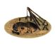
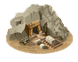
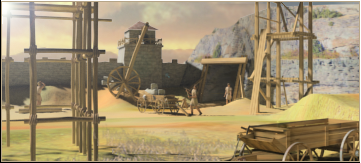

RTR: Imperium Surrectum
RTR: Imperium SurrectumMines (Industry) chain
2 levels, each replacing the one before it — you upgrade in place rather than building alongside.
Mines (Industry) → Deep Mining Complex (Industry)
Pictures are the game's own building art. Where a culture ships none of its own, the game falls back to another culture's, and that is what is shown here.
Levels at a glance
| Level | Cost | Build time | Minimum settlement | Upgrades to | Level | Cost | Build time | Minimum settlement | Upgrades to | ||
|---|---|---|---|---|---|---|---|---|---|---|---|
 | Mines (Industry) | 5,000 | 4 | large town | Deep Mining Complex (Industry) |  | Deep Mining Complex (Industry) | 12,000 | 8 | city | — |
Costs in denarii, build time in turns.
Mines (Industry)

Mines are needed to exploit the natural wealth of a province, although the dangerous underground work costs the lives of many slaves.
A blessing for those who reap the riches of the Earth, and for those who tax the reapers! Mines are needed to exploit the natural wealth of a province, although the dangerous underground work costs the lives of many slaves.
Most mines are not very deep, as they are dug by back-breaking labour and follow the richest seams of ore into hillsides (drift mining), rather than having vertical mine shafts.
Note on the effects
The mining value of these Mines is 15 in provinces with gold, 12 in provinces with silver (and no gold), and 9 elsewhere. Due to a modding limitation the value shown under the effects does not reflect the actual profit of this building, which also depends on what minable resources are present and in what quantities.
Tip: To see the actual profit put this building in the building queue (and only that one) and look at the 'Settlement income' tab to see the true effect highlighted in green.
Wording varies by culture: 4 versions of this description exist in the game files.
| Cost | 5,000 denarii | Build time | 4 turns | Minimum settlement | large town | Upgrades to | Deep Mining Complex (Industry) |
What it does
- -2 public order (happiness) (player only)
- -1 population growth (player only)
Show 62 effects that apply only in the circumstances shown
- Mining income from coal: +60 per turn — only when
resource coal and hidden_resource qty_coal_1 and resource gold - Mining income from copper: +120 per turn — only when
resource copper and hidden_resource qty_copper_1 and resource gold - Mining income from copper: +240 per turn — only when
resource copper and hidden_resource qty_copper_2 and resource gold - Mining income from copper: +360 per turn — only when
resource copper and hidden_resource qty_copper_3 and resource gold - Mining income from gold: +180 per turn — only when
resource gold and hidden_resource qty_gold_1 and resource gold - Mining income from gold: +360 per turn — only when
resource gold and hidden_resource qty_gold_2 and resource gold - Mining income from gold: +540 per turn — only when
resource gold and hidden_resource qty_gold_3 and resource gold - Mining income from gold: +720 per turn — only when
resource gold and hidden_resource qty_gold_4 and resource gold - Mining income from iron: +60 per turn — only when
resource iron and hidden_resource qty_iron_1 and resource gold - Mining income from iron: +120 per turn — only when
resource iron and hidden_resource qty_iron_2 and resource gold - Mining income from iron: +240 per turn — only when
resource iron and hidden_resource qty_iron_4 and resource gold - Mining income from lead: +60 per turn — only when
resource lead and hidden_resource qty_lead_1 and resource gold - Mining income from lead: +120 per turn — only when
resource lead and hidden_resource qty_lead_2 and resource gold - Mining income from lead: +180 per turn — only when
resource lead and hidden_resource qty_lead_3 and resource gold - Mining income from silver: +180 per turn — only when
resource silver and hidden_resource qty_silver_1 and resource gold - Mining income from silver: +360 per turn — only when
resource silver and hidden_resource qty_silver_2 and resource gold - Mining income from silver: +720 per turn — only when
resource silver and hidden_resource qty_silver_4 and resource gold - Mining income from tin: +60 per turn — only when
resource tin and hidden_resource qty_tin_1 and resource gold - Mining income from tin: +120 per turn — only when
resource tin and hidden_resource qty_tin_2 and resource gold - Mining income from tin: +180 per turn — only when
resource tin and hidden_resource qty_tin_3 and resource gold - Mining income from coal: +30 per turn — only when
resource coal and hidden_resource qty_coal_1 and not resource silver and not resource gold - Mining income from coal: +60 per turn — only when
resource coal and hidden_resource qty_coal_2 and not resource silver and not resource gold - Mining income from copper: +60 per turn — only when
resource copper and hidden_resource qty_copper_1 and not resource silver and not resource gold - Mining income from copper: +120 per turn — only when
resource copper and hidden_resource qty_copper_2 and not resource silver and not resource gold - Mining income from copper: +180 per turn — only when
resource copper and hidden_resource qty_copper_3 and not resource silver and not resource gold - Mining income from copper: +240 per turn — only when
resource copper and hidden_resource qty_copper_4 and not resource silver and not resource gold - Mining income from iron: +30 per turn — only when
resource iron and hidden_resource qty_iron_1 and not resource silver and not resource gold - Mining income from iron: +60 per turn — only when
resource iron and hidden_resource qty_iron_2 and not resource silver and not resource gold - Mining income from iron: +90 per turn — only when
resource iron and hidden_resource qty_iron_3 and not resource silver and not resource gold - Mining income from iron: +120 per turn — only when
resource iron and hidden_resource qty_iron_4 and not resource silver and not resource gold - Mining income from lead: +30 per turn — only when
resource lead and hidden_resource qty_lead_1 and not resource silver and not resource gold - Mining income from lead: +60 per turn — only when
resource lead and hidden_resource qty_lead_2 and not resource silver and not resource gold - Mining income from lead: +90 per turn — only when
resource lead and hidden_resource qty_lead_3 and not resource silver and not resource gold - Mining income from tin: +30 per turn — only when
resource tin and hidden_resource qty_tin_1 and not resource silver and not resource gold - Mining income from tin: +60 per turn — only when
resource tin and hidden_resource qty_tin_2 and not resource silver and not resource gold - Mining income from tin: +90 per turn — only when
resource tin and hidden_resource qty_tin_3 and not resource silver and not resource gold - Mining income from tin: +150 per turn — only when
resource tin and hidden_resource qty_tin_5 and not resource silver and not resource gold - Mining income from coal: +45 per turn — only when
resource coal and hidden_resource qty_coal_1 and resource silver and not resource gold - Mining income from coal: +90 per turn — only when
resource coal and hidden_resource qty_coal_2 and resource silver and not resource gold - Mining income from copper: +90 per turn — only when
resource copper and hidden_resource qty_copper_1 and resource silver and not resource gold - Mining income from copper: +180 per turn — only when
resource copper and hidden_resource qty_copper_2 and resource silver and not resource gold - Mining income from copper: +360 per turn — only when
resource copper and hidden_resource qty_copper_4 and resource silver and not resource gold - Mining income from iron: +90 per turn — only when
resource iron and hidden_resource qty_iron_2 and resource silver and not resource gold - Mining income from iron: +135 per turn — only when
resource iron and hidden_resource qty_iron_3 and resource silver and not resource gold - Mining income from lead: +45 per turn — only when
resource lead and hidden_resource qty_lead_1 and resource silver and not resource gold - Mining income from lead: +90 per turn — only when
resource lead and hidden_resource qty_lead_2 and resource silver and not resource gold - Mining income from lead: +135 per turn — only when
resource lead and hidden_resource qty_lead_3 and resource silver and not resource gold - Mining income from silver: +135 per turn — only when
resource silver and hidden_resource qty_silver_1 and resource silver and not resource gold - Mining income from silver: +270 per turn — only when
resource silver and hidden_resource qty_silver_2 and resource silver and not resource gold - Mining income from silver: +405 per turn — only when
resource silver and hidden_resource qty_silver_3 and resource silver and not resource gold - Mining income from tin: +45 per turn — only when
resource tin and hidden_resource qty_tin_1 and resource silver and not resource gold - Mining income from tin: +90 per turn — only when
resource tin and hidden_resource qty_tin_2 and resource silver and not resource gold - Mining income from tin: +135 per turn — only when
resource tin and hidden_resource qty_tin_3 and resource silver and not resource gold - mining income 15 — only when
resource gold - mining income 12 — only when
resource silver and not resource gold - mining income 9 — only when
not resource silver and not resource gold - mine resource -15 — only when
resource gold and no_other_government and is_player - mine resource -12 — only when
resource silver and not resource gold and no_other_government and is_player - mine resource -9 — only when
not resource silver and not resource gold and no_other_government and is_player - +4 taxable income — only when
slave_trade_building_supply - -2 public order (happiness) — only when
not is_player and building_present_min_level mines mines - -1 population growth — only when
not is_player and building_present_min_level mines mines
Deep Mining Complex (Industry)

These deeper Mines exploit the wealth of a region more efficiently, allowing seams of ore to be dug out even below the water table.
In addition to the miners, teams of slaves are used to lift water out of the workings using treadmill-powered waterwheels. Working in a mine like this is usually a deferred death sentence.
The wealth extracted by these mines is more than enough to make a handsome profit and pay for a constant influx of new slave labourers.
Note on the effects
The mining value of the Deep Mining Complex is 25 in provinces with gold, 20 in provinces with silver (and no gold), and 15 elsewhere. Due to a modding limitation the value shown under the effects does not reflect the actual profit of this building, which also depends on what minable resources are present and in what quantities.
Tip: To see the actual profit put this building in the building queue (and only that one) and look at the 'Settlement income' tab to see the true effect highlighted in green.
Wording varies by culture: 3 versions of this description exist in the game files.
| Cost | 12,000 denarii | Build time | 8 turns | Minimum settlement | city |
What it does
- -4 public order (happiness) (player only)
- -2 population growth (player only)
Show 62 effects that apply only in the circumstances shown
- Mining income from coal: +100 per turn — only when
resource coal and hidden_resource qty_coal_1 and resource gold - Mining income from copper: +200 per turn — only when
resource copper and hidden_resource qty_copper_1 and resource gold - Mining income from copper: +400 per turn — only when
resource copper and hidden_resource qty_copper_2 and resource gold - Mining income from copper: +600 per turn — only when
resource copper and hidden_resource qty_copper_3 and resource gold - Mining income from gold: +300 per turn — only when
resource gold and hidden_resource qty_gold_1 and resource gold - Mining income from gold: +600 per turn — only when
resource gold and hidden_resource qty_gold_2 and resource gold - Mining income from gold: +900 per turn — only when
resource gold and hidden_resource qty_gold_3 and resource gold - Mining income from gold: +1200 per turn — only when
resource gold and hidden_resource qty_gold_4 and resource gold - Mining income from iron: +100 per turn — only when
resource iron and hidden_resource qty_iron_1 and resource gold - Mining income from iron: +200 per turn — only when
resource iron and hidden_resource qty_iron_2 and resource gold - Mining income from iron: +400 per turn — only when
resource iron and hidden_resource qty_iron_4 and resource gold - Mining income from lead: +100 per turn — only when
resource lead and hidden_resource qty_lead_1 and resource gold - Mining income from lead: +200 per turn — only when
resource lead and hidden_resource qty_lead_2 and resource gold - Mining income from lead: +300 per turn — only when
resource lead and hidden_resource qty_lead_3 and resource gold - Mining income from silver: +300 per turn — only when
resource silver and hidden_resource qty_silver_1 and resource gold - Mining income from silver: +600 per turn — only when
resource silver and hidden_resource qty_silver_2 and resource gold - Mining income from silver: +1200 per turn — only when
resource silver and hidden_resource qty_silver_4 and resource gold - Mining income from tin: +100 per turn — only when
resource tin and hidden_resource qty_tin_1 and resource gold - Mining income from tin: +200 per turn — only when
resource tin and hidden_resource qty_tin_2 and resource gold - Mining income from tin: +300 per turn — only when
resource tin and hidden_resource qty_tin_3 and resource gold - Mining income from coal: +50 per turn — only when
resource coal and hidden_resource qty_coal_1 and not resource silver and not resource gold - Mining income from coal: +100 per turn — only when
resource coal and hidden_resource qty_coal_2 and not resource silver and not resource gold - Mining income from copper: +100 per turn — only when
resource copper and hidden_resource qty_copper_1 and not resource silver and not resource gold - Mining income from copper: +200 per turn — only when
resource copper and hidden_resource qty_copper_2 and not resource silver and not resource gold - Mining income from copper: +300 per turn — only when
resource copper and hidden_resource qty_copper_3 and not resource silver and not resource gold - Mining income from copper: +400 per turn — only when
resource copper and hidden_resource qty_copper_4 and not resource silver and not resource gold - Mining income from iron: +50 per turn — only when
resource iron and hidden_resource qty_iron_1 and not resource silver and not resource gold - Mining income from iron: +100 per turn — only when
resource iron and hidden_resource qty_iron_2 and not resource silver and not resource gold - Mining income from iron: +150 per turn — only when
resource iron and hidden_resource qty_iron_3 and not resource silver and not resource gold - Mining income from iron: +200 per turn — only when
resource iron and hidden_resource qty_iron_4 and not resource silver and not resource gold - Mining income from lead: +50 per turn — only when
resource lead and hidden_resource qty_lead_1 and not resource silver and not resource gold - Mining income from lead: +100 per turn — only when
resource lead and hidden_resource qty_lead_2 and not resource silver and not resource gold - Mining income from lead: +150 per turn — only when
resource lead and hidden_resource qty_lead_3 and not resource silver and not resource gold - Mining income from tin: +50 per turn — only when
resource tin and hidden_resource qty_tin_1 and not resource silver and not resource gold - Mining income from tin: +100 per turn — only when
resource tin and hidden_resource qty_tin_2 and not resource silver and not resource gold - Mining income from tin: +150 per turn — only when
resource tin and hidden_resource qty_tin_3 and not resource silver and not resource gold - Mining income from tin: +250 per turn — only when
resource tin and hidden_resource qty_tin_5 and not resource silver and not resource gold - Mining income from coal: +75 per turn — only when
resource coal and hidden_resource qty_coal_1 and resource silver and not resource gold - Mining income from coal: +150 per turn — only when
resource coal and hidden_resource qty_coal_2 and resource silver and not resource gold - Mining income from copper: +150 per turn — only when
resource copper and hidden_resource qty_copper_1 and resource silver and not resource gold - Mining income from copper: +300 per turn — only when
resource copper and hidden_resource qty_copper_2 and resource silver and not resource gold - Mining income from copper: +600 per turn — only when
resource copper and hidden_resource qty_copper_4 and resource silver and not resource gold - Mining income from iron: +150 per turn — only when
resource iron and hidden_resource qty_iron_2 and resource silver and not resource gold - Mining income from iron: +225 per turn — only when
resource iron and hidden_resource qty_iron_3 and resource silver and not resource gold - Mining income from lead: +75 per turn — only when
resource lead and hidden_resource qty_lead_1 and resource silver and not resource gold - Mining income from lead: +150 per turn — only when
resource lead and hidden_resource qty_lead_2 and resource silver and not resource gold - Mining income from lead: +225 per turn — only when
resource lead and hidden_resource qty_lead_3 and resource silver and not resource gold - Mining income from silver: +225 per turn — only when
resource silver and hidden_resource qty_silver_1 and resource silver and not resource gold - Mining income from silver: +450 per turn — only when
resource silver and hidden_resource qty_silver_2 and resource silver and not resource gold - Mining income from silver: +675 per turn — only when
resource silver and hidden_resource qty_silver_3 and resource silver and not resource gold - Mining income from tin: +75 per turn — only when
resource tin and hidden_resource qty_tin_1 and resource silver and not resource gold - Mining income from tin: +150 per turn — only when
resource tin and hidden_resource qty_tin_2 and resource silver and not resource gold - Mining income from tin: +225 per turn — only when
resource tin and hidden_resource qty_tin_3 and resource silver and not resource gold - mining income 25 — only when
resource gold - mining income 20 — only when
resource silver and not resource gold - mining income 15 — only when
not resource silver and not resource gold - mine resource -25 — only when
resource gold and no_other_government and is_player - mine resource -20 — only when
resource silver and not resource gold and no_other_government and is_player - mine resource -15 — only when
not resource silver and not resource gold and no_other_government and is_player - +8 taxable income — only when
slave_trade_building_supply - -4 public order (happiness) — only when
not is_player and building_present_min_level mines mines+1 - -2 population growth — only when
not is_player and building_present_min_level mines mines+1
What the shorthands in those conditions stand for (2)
These are the mod's own, quoted from the game files unchanged.
| Shorthand | Stands for | Shorthand | Stands for | ||||
|---|---|---|---|---|---|---|---|
no_other_government | no_building_tagged government queued | slave_trade_building_supply | resource slave_trade or hidden_resource slave_supply_built factionwide |